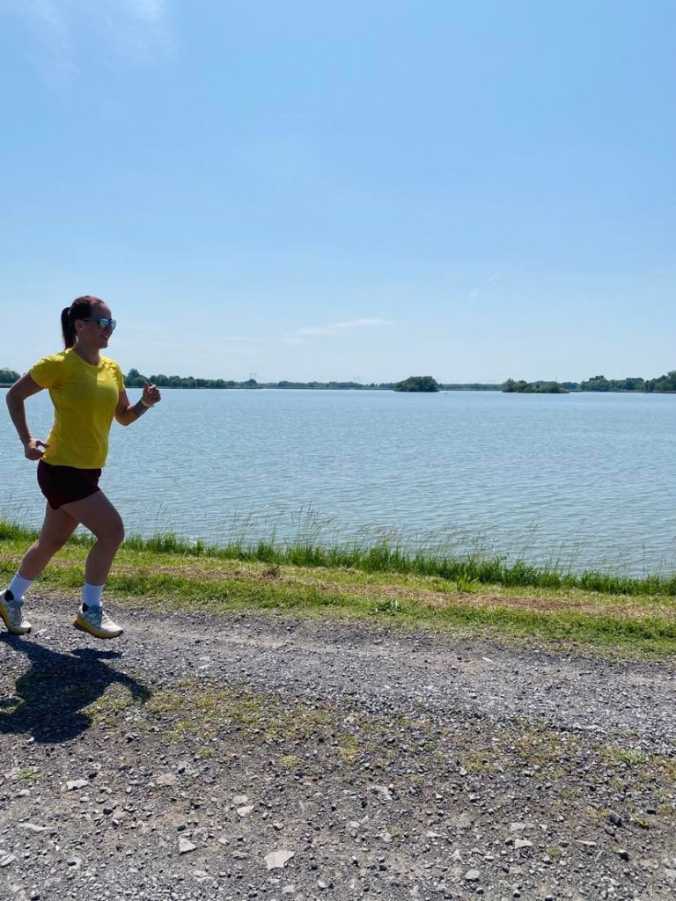

A futás fantasztikus módja a testmozgásnak és a természet élvezetének egyesítésének.
A megfelelő futófelszerelés elengedhetetlen:
A tó partján való futás csodálatos élményt nyújt. A természet közelsége inspiráló lehet.
Futás közben számos futótársat találhatsz meg, akikkel közösen tehetitek izgalmasabbá a sportot.
Ha komolyan veszed a futást, érdemes szakértői edzéseken részt venned.
| Edzés típusa | Időpont | Helyszín |
|---|---|---|
| Hosszútáv futás | Kedd, 18:00 | Park |
| Tempófutás | Péntek, 17:30 | Atletikai pálya |